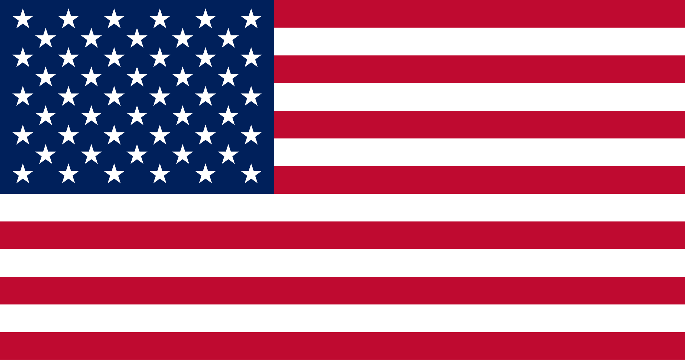
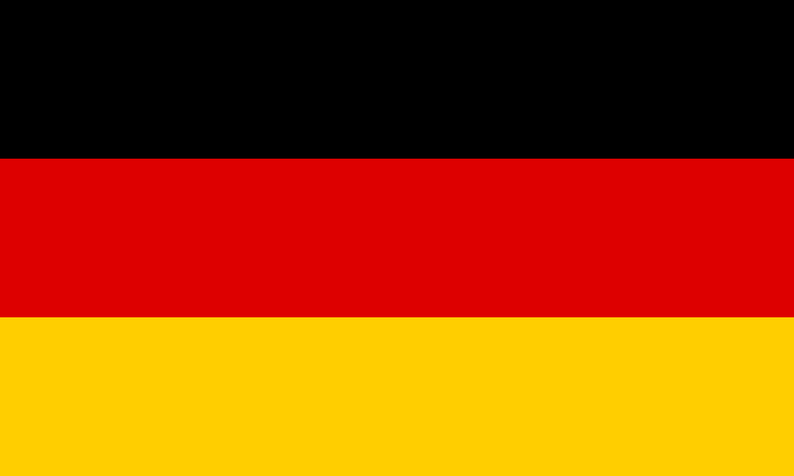
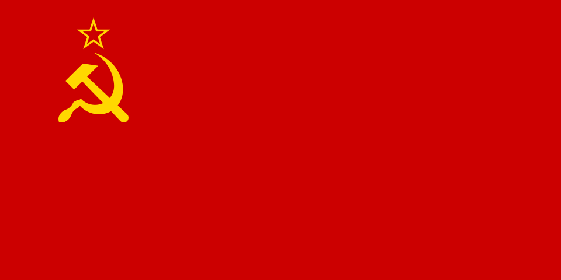
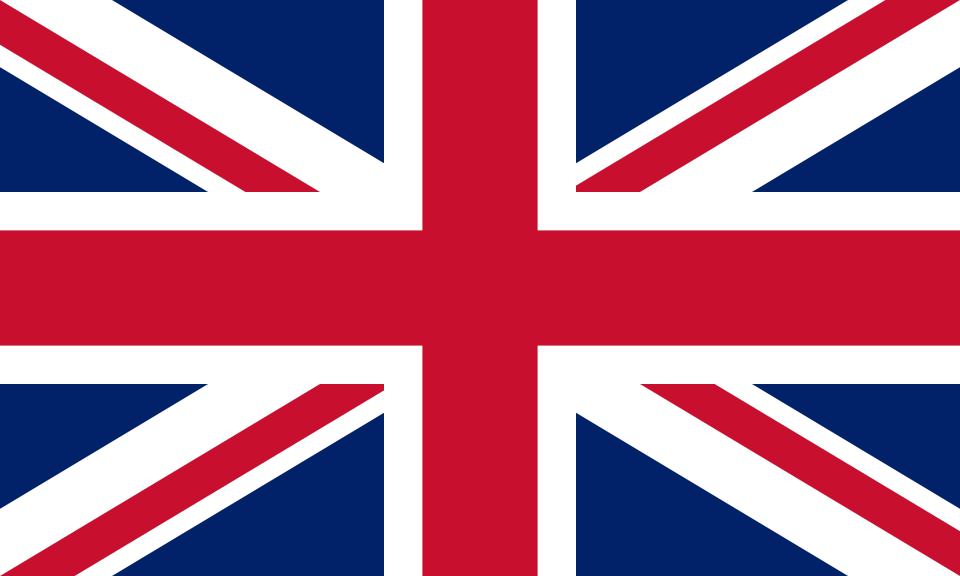
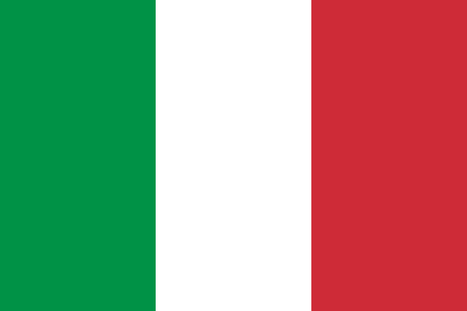
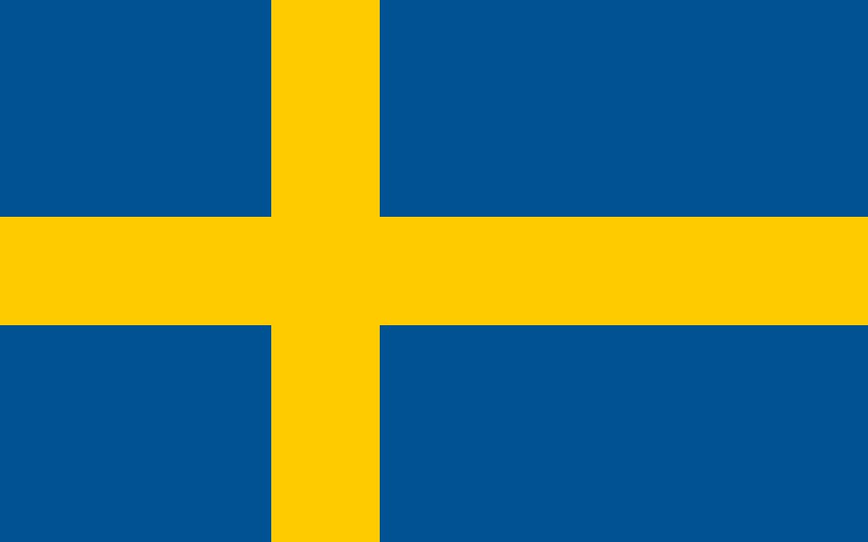

EUA
ALEMANHA
URSS
GRÃ-BRETANHA JAPÃO
JAPÃO
 CHINA
CHINA

ITÁLIA FRANÇA
SUÉCIA ISRAEL
ISRAEL
WikiThunder
A enciclopédia da comunidade sobre veículos de War Thunder.
War Thunder é um MMO de combate multi-plataforma desenvolvido pela Gaijin Entertainment. O jogo abrange aviação militar, blindados e forças navais de vários países ao longo de diversas eras de conflitos, desde a Segunda Guerra Mundial até conflitos modernos.
Com um dos maiores arsenais de qualquer jogo de combate, War Thunder conta com aeronaves, tanques, navios e helicópteros de nações como EUA, URSS, Alemanha, Grã-Bretanha, Japão e muito mais. Cada veículo é modelado com base em documentos históricos reais.
Selecione uma nação no menu lateral, escolha a categoria de veículo na barra de navegação e explore as fichas completas com estatísticas, história e avaliações da comunidade.
O Battle Rating (BR) determina em quais batalhas cada veículo pode participar. Vai de 1.0 até 13.0, onde veículos com BR similar se enfrentam para garantir partidas equilibradas.
War Thunder oferece três modos principais: Arcade Battles, com física simplificada e mais ação; Realistic Battles, com danos e física mais fiéis; e Simulator Battles, o modo mais imersivo com cockpit obrigatório e comunicação limitada.
Cada nação possui uma árvore tecnológica dividida por tipo de veículo e era histórica. O progresso é feito com Silver Lions e Research Points ganhos em batalha, desbloqueando gradualmente veículos mais avançados e modernos.